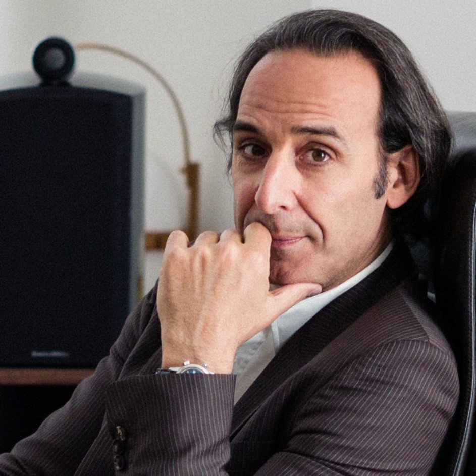

Soundtrack
Music is also one of the charms of “The Grand Budapest Hotel” that rivals the visual beauty. It further showcases the lively yet bizarre atmosphere of the film. The music used in the film was created by Alexandre Desplat, a film score composer who has worked on all of Wes Anderson's films except for his first few. He participated in everything from "Fantastic Mr. Fox" released in 2009 to the most recent "Asteroid City" released in 2023. It would have been difficult for the two of them to have been together for this long unless their works worked along very well. Below are some of the main themes from the movie that shows that.
Main Themes
|  | Mr. Moustafa | |
| The New Lobby Boy | ||
| M. Ivan | ||
| Canto At Gabelmeister's Peak |